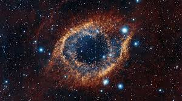
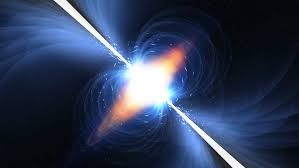
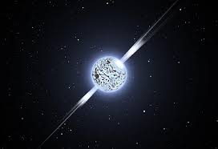
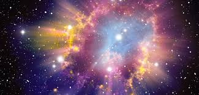
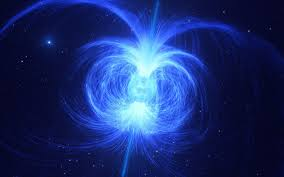
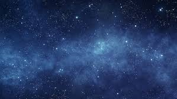
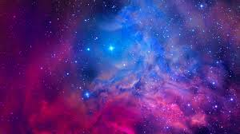

SS STELLAR SPACE
SPACE THINGS

SPACE NEBULA

SPACE PULSAR

QUASAR PULSAR

SUPER NOVA

MAGNETAR

BLACKHOLE

SPACE

SPACE CLOUD
| NAME | DISCRIPTION |
|---|---|
| space | Space is a three-dimensional continuum containing positions and directions. In classical physics, physical space is often conceived in three linear dimensions. Modern physicists usually consider it, with time, to be part of a boundless four-dimensional continuum known as spacetime. |
| time in space | In physics, spacetime is a mathematical model that fuses the three dimensions of space and the one dimension of time into a single four-dimensional continuum. Spacetime diagrams are useful in visualizing and understanding relativistic effects, such as how different observers perceive where and when events occur |
| stellar space | In astronomy, a term used to refer to the mapping of stars, nebula, and other interstellar phonomena. Stellar classification is a classification of stars based initially on photospheric temperature and its associated spectral characteristics, and subsequenly refined in terms of other characteristics | nebula | A nebula is a giant cloud of dust and gas in space. Some nebulae (more than one nebula) come from the gas and dust thrown out by the explosion of a dying star, such as a supernova. Other nebulae are regions where new stars are beginning to form. For this reason, some nebulae are called "star nurseries." |
| pulsar star | Pulsars are rotating neutron stars observed to have pulses of radiation at very regular intervals that typically range from milliseconds to seconds. Pulsars have very strong magnetic fields which funnel jets of particles out along the two magnetic poles. These accelerated particles produce very powerful beams of light. |
| quasar pulsar | Pulsars and neutron stars are the remnants of the massive stars after they run out of fuel. And to be precise pulsars are a type of neutron star. Quasars are in fact defined as the astronomical object which is very larger than the pulsar and also has very high luminosity. |
| super nova | A supernova is the colossal explosion of a star. Scientists have identified several types of supernova. One type, called a “core-collapse” supernova, occurs in the last stage in the life of massive stars that are at least eight times larger than our Sun. As these stars burn the fuel in their cores, they produce heat. |
| magnetar | A magnetar's magnetic field is so strong, in fact, that it can crack open the star's surface to release powerful bursts of energy that may be visible across billions of light-years. Despite these amazing properties, astronomers aren't quite sure how magnetars form, with a myriad of possibilities on the table |